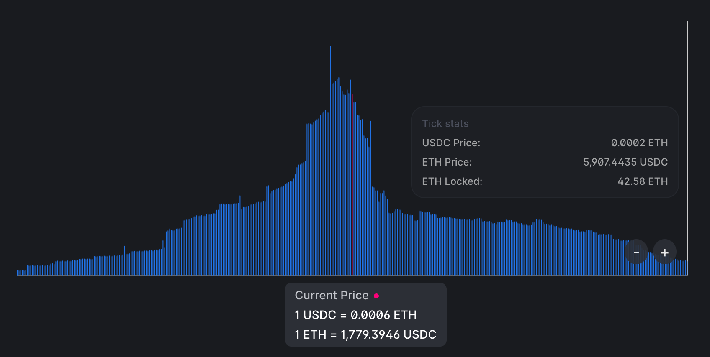
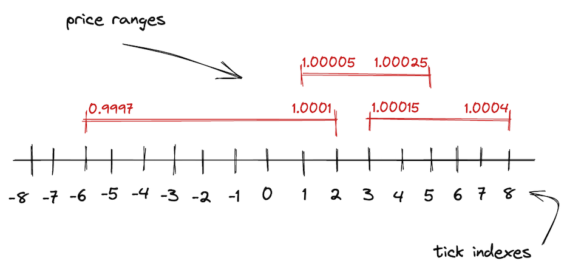

Uniswap V3 简介
本章重述了 Uniswap V3 的白皮书。再次强调，如果你不理解所有概念也没关系。当这些概念转化为代码时，它们会变得更加清晰。
为了更好地理解 Uniswap V3 带来的创新，让我们首先看看 Uniswap V2 的不足之处。
Uniswap V2 是一个实现了单一 AMM 算法的通用交易所。然而，并非所有交易对都是平等的。交易对可以按价格波动性分组：
- 中等和高价格波动性的代币。这个组包括大多数代币，因为大多数代币的价格没有与某物挂钩，容易受到市场波动的影响。
- 低波动性的代币。这个组包括锚定代币，主要是稳定币：USDC/USDT、USDC/DAI、USDT/DAI 等。还包括：ETH/stETH、ETH/rETH（包装 ETH 的变体）。
这些组需要不同的、我们称之为池配置。主要区别在于，锚定代币需要高流动性来减少大额交易的需求效应（我们在上一章中了解到这一点）。无论我们想买卖多少代币，USDC 和 USDT 的价格必须保持接近 1。由于 Uniswap V2 的通用 AMM 算法不太适合稳定币交易，其他 AMM（主要是 Curve）在稳定币交易中更受欢迎。
造成这个问题的原因是 Uniswap V2 池中的流动性是无限分布的——pool流动性允许在任何价格下进行交易，从 0 到无穷大：

这可能看起来不是坏事，但这使得资本效率低下。资产的历史价格通常保持在某个定义的范围内，无论这个范围是窄还是宽。例如，ETH 的历史价格范围是从 4,800（根据 CoinMarketCap）。今天（2022 年 6 月，1 ETH 价值 5000 的价格购买 1 个以太币，所以在这个价格提供流动性是没有意义的。因此，在远离当前价格或永远不会达到的价格范围内提供流动性是没有意义的。
当然，我们都相信 ETH 有朝一日会达到
$10,000，但这是另一个故事了。
集中流动性
Uniswap V3引入了集中流动性：流动性提供者现在可以选择他们想要提供流动性的价格范围。这通过允许在狭窄的价格范围内投入更多流动性来提高资本效率，使Uniswap变得更加多样化：它现在可以为具有不同波动性的交易对配置池。这就是V3如何改进V2的方式。
简而言之，一个Uniswap V3交易对就是许多小的Uniswap V2交易对。V2和V3之间的主要区别在于，在V3中，一个交易对中有多个价格范围。而且这些较短的价格范围每个都有有限的储备。整个从0到无穷的价格范围被分割成较短的价格范围，每个范围都有自己的流动性数量。但是，关键是在那个较短的价格范围内，它的工作方式与Uniswap V2完全相同。这就是为什么我说V3交易对是许多小的V2交易对。
现在，让我们试着将其可视化。我们不希望曲线是无限的，所以在点 a 和 b 处切断它，并将其作为曲线的边界。此外，我们移动曲线使边界落在坐标轴上。这就是我们得到的结果：

看起来有点孤单，不是吗？这就是为什么Uniswap V3中有许多价格范围——这样它们就不会感到孤单了🙂
正如我们在上一章看到的，买入或卖出代币会使价格沿曲线移动。价格范围限制了价格的移动。当价格移动到任一点时，池子变得耗尽：其中一种代币的储备将为0，买入这种代币将不再可能。
在上面的图表中，假设起始价格在曲线的中间。要到达点，我们需要买入所有可用的并在范围内最大化；要到达点，我们需要买入所有可用的并在范围内最大化。在这些点上，范围内只有一种代币！
有趣的事实：这允许使用Uniswap V3价格范围作为限价订单！
当当前价格范围在交易过程中耗尽时会发生什么？价格会滑入下一个价格范围。如果下一个价格范围不存在，交易最终会部分完成——我们将在本书后面看到这是如何工作的。
这就是生产环境中的USDC/ETH池中流动性的分布情况：

你可以看到，在当前价格附近有大量流动性，但离它越远流动性就越少——这是因为流动性提供者努力提高他们的资本效率。此外，整个范围并非无限，其上限在图中显示。
Uniswap V3 的数学原理
从数学角度来看，Uniswap V3 是基于 V2 的：它使用相同的公式，但这些公式被...我们称之为增强了。
为了处理价格范围之间的转换、简化流动性管理并避免舍入误差，Uniswap V3 使用了这些新概念：
是流动性数量。池中的流动性是代币储备的组合（即两个数字）。我们知道它们的乘积是 ，我们可以用这个来推导流动性的度量，即 ——一个与自身相乘等于 的数。 是 和 的几何平均数。
是以代币 1 表示的代币 0 的价格。由于池中代币价格是彼此的倒数，我们可以在计算中只使用其中一个（按惯例，Uniswap V3 使用 ）。以代币 0 表示的代币 1 的价格简单地是 。同样，。
为什么使用 而不是 ？有两个原因：
-
平方根计算不精确并会导致舍入误差。因此，在合约中存储平方根而不进行计算更容易（我们不会在合约中存储 和 ）。
-
与 有一个有趣的联系： 也是输出量变化与 变化之间的关系。
证明：
定价
再次强调，我们不需要计算实际价格——我们可以直接计算输出量。此外，由于我们不打算跟踪和存储 和 ，我们的计算将仅基于 和 。
从上面的公式中，我们可以找到 ：
见上面证明的第三步。
如我们之前讨论的，池中的价格是彼此的倒数。因此， 是：
和 使我们不需要存储和更新池储备。此外，我们不需要每次都计算 ，因为我们总是可以找到 及其倒数。
Ticks
正如我们在本章中了解到的，V2 的无限价格范围在 V3 中被分割成较短的价格范围。这些较短的价格范围中的每一个都由边界限制——上限和下限。为了跟踪这些边界的坐标，Uniswap V3 使用了 ticks。

在 V3 中，整个价格范围由均匀分布的离散 ticks 划分。每个 tick 都有一个索引，对应于某个特定价格：
其中 是 tick 处的价格。取 1.0001 的幂具有一个理想的特性：两个相邻 ticks 之间的差异是 0.01% 或 1 个基点。
基点（1% 的 1/100，或 0.01%，或 0.0001）是金融领域中百分比的度量单位。你可能在中央银行宣布利率变化时听说过基点。
如我们之前讨论的，Uniswap V3 存储 ，而不是 。因此，公式实际上是：
所以，我们得到的值如：，，。
Ticks 是可以为正也可以为负的整数，当然，它们不是无限的。Uniswap V3 将 存储为 Q64.96 定点数，这是一个有理数，使用 64 位表示整数部分，96 位表示小数部分。因此，价格（等于 的平方）在范围 内。而 ticks 在以下范围内：
要深入了解 Uniswap V3 的数学原理，我强烈推荐 Atis Elsts 的 这份技术说明。